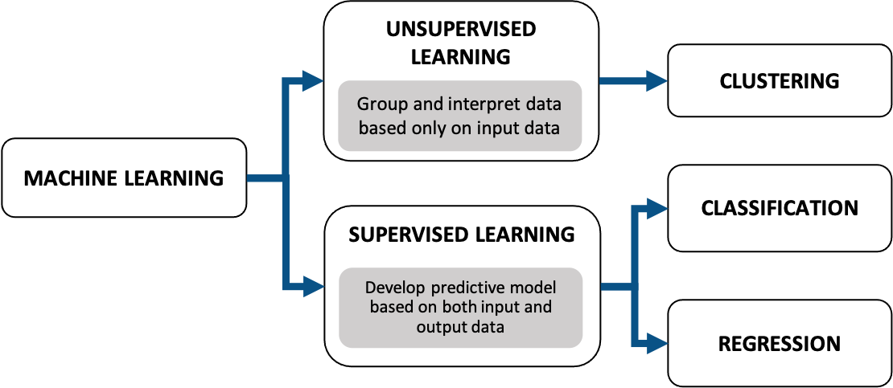
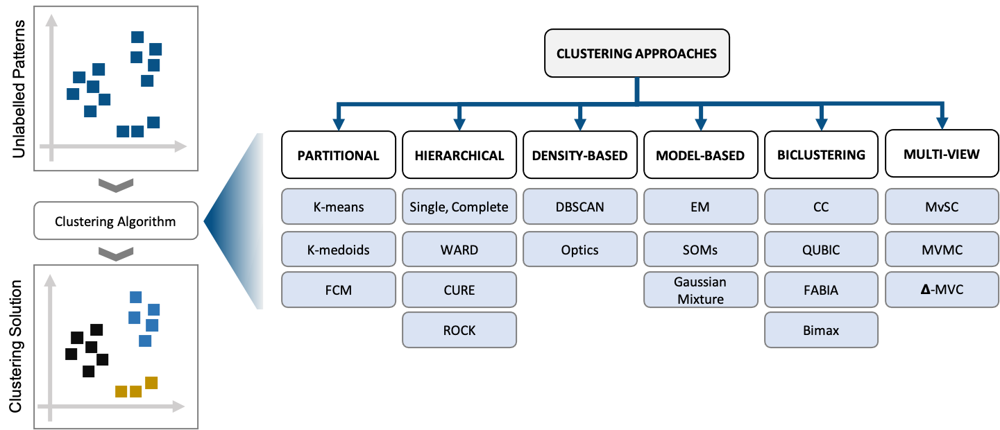
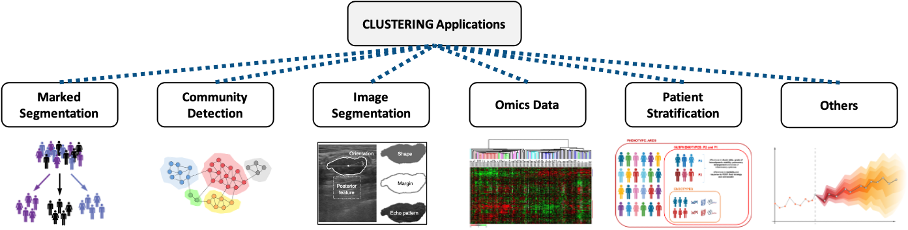

Machine Learning
Machine learning teaches computers to do what comes naturally to humans and animals: learn from experience. Machine learning algorithms use computational methods to “learn” information directly from data without relying on a predetermined equation as a model. The algorithms adaptively improve their performance as the number of samples available for learning increases.
Machine learning algorithms find natural patterns in data that generate insight and help you make better decisions and predictions. They are used every day to make critical decisions in medical diagnosis, stock trading, forecasting, and more.
Machine learning uses two types of techniques: supervised learning, which trains a model on known input and output data so that it can predict future outputs, and unsupervised learning, which finds hidden patterns or intrinsic structures in input data.
Unsupervised Machine Learning
Unsupervised learning finds hidden patterns or intrinsic structures in data. It is used to draw inferences from datasets consisting of input data without labeled responses. Clustering is the most common unsupervised learning technique. It is used for exploratory data analysis to find hidden patterns or groupings in data.
In cluster analysis, data is partitioned into groups based on some measure of similarity or shared characteristic. Clusters are formed so that objects in the same cluster are very similar and objects in different clusters are very distinct.
There are several clustering algorithms that serve for different purposes:
Applications for clustering include gene sequence analysis, market research, object recognition, and more. Some examples are:
